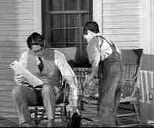

| To Kill a Mockingbird (SE)
/A,A |
|
Universal/1962/130m/WS,1.85
|
One of the all time great film's if for nothing else it's humanity.
Atticus Finch, played impeccably by Gregory Peck, is perhaps the greatest
screen father I can recall. The man teaches his children by example,
treating them with dignity and understanding. From the great novel by
Harper Lee, this tale of growing up in the South of the 1930s is
splendidly evocative of place and period.
The brilliant opening credit arrangement sets up the
main characters, a sense of place and time and foreshadows the
events to come, blending beautifully with the elegant narrative of the
grown Scout. From the opening cigar box filled with toys and memories,
director Robert Mulligan slides perfectly into the world of Scout and Gem
Finch, camera detailing the world of their street and the characters that
live there. You know you are in for something special.
The events of To Kill a Mockingbird take
place over the course of two summers when the small Southern town is
galvanized by the rape trial of a black man. Atticus Finch is appointed by
the court to defend Tom Robinson, challenging his
integrity by placing him in a difficult and hostile position. While the
town simmers with red necks hungry for a lynching, the Finch children
learn about life by watching their father and interacting in the
neighborhood. There are several confrontations that are worth their weight
in movie gold, but To Kill a Mockingbird does not count on
melodramatic crescendos to make its points about humanity. Throughout the
filmmaking there is a comfortable evenness of style that reassures its
audience, just as the dependable Atticus reassures his children.
|

|
|
The quintessential
screen father. ©Universal |
The script by Horton Foote captures the wonder and innocence of the Lee
novel, maintaining the point of view of childhood. The great collaborative
effort helmed by Mulligan includes a magical score by Elmer Bernstein,
splendid black and white photography by Russell Harlan.
Peck won the Academy Award as Best Actor in 1962
for his stunning performance as Atticus. An actor who always commanded
respect on the screen, his restrained portrait of a small town lawyer is
mesmerizing for its core of truth. Robert Duvall has a few startling
moments in his screen debut as Boo Radley, the disturbed mystery man-child
who lives next door to the Finches. The children, Mary Badham (A bit of
trivia. Mary Badham is the younger sister of director John Badham.) and
Phillip Ashford are quite wonderful in their screen debuts. Neither went
on to an acting career, but they play the Finch kids just like the real
thing. Brock Peters as Tom Robinson brings another side of dignity to his
role and James Anderson spits out hate and ignorance from every pore as
Tom Ewell.
The DVD is the first widescreen video release of To
Kill a Mockingbird. The images
are as clear as the wisdom of Lee's novel. The 1962 elements are almost in
perfect condition save for a a couple of frame length scratches in the
early going. The night scenes are alive with the glow of moonlight.
Contrast is perfect. Nothing is over-emphasized in the transfer. Watching
on component out, there were no annoying NTSC artifacts to disturb the
beautiful compositions.
This is a great special edition of To Kill a
Mockingbird. Not only is the audio commentary of Robert Mulligan and
Producer Alan Pakula included, but a full blown one and half hour
documentary about the film and the place in time is included. The
commentary by Mulligan and Pakula is chuck full of film wisdom and an
obvious love for what is their magnificent contribution to film heritage.
Much of it is not scene specific, but includes their cinematic
philosophies. The documentary, Fearful
Symmetry directed by Charles Kiselyak and narrated by the comforting
Southern voice of Mary Williams isn't only about the making of the
film, but also about Harper Lee's town and the setting for the film.
Intercut with remembrances from cast members and Pakula and Mulligan, town
folk remember what Monroeville was like before Macdonald's. Gregory Peck,
Horton Foote, Elmer Bernstein, Mary Badham and Phillip Ashford all share
their memories of To Kill a Mockingbird for posterity. This is an
absolute must-see, must-have DVD. Watch it with your kids. Maybe they can
learn something. I hope mine did.
*Memories
of Mockingbird's Personal Meaning
It's one of great childhood remembrance films. The summer friendship of
the Finch kids and the visiting neighbor Dill is beautifully evocative of
the purity of childhood. Atticus Finch (Gregory Peck) is one of the great
screen fathers ever depicted. Finch stands taller than most characters
ever recorded on celluloid. Peck's poignant sensitive portrayal is one of
dignity and power. Everything seems to work in this film. But most of all,
its the stirring ode to fatherhood. How can anyone fail to feel a
wellspring of emotion in the courtroom scene when the preacher says to
young Scout, "Miss Jean-Louise, stand up. Stand up, your father's
passing."
I remember thinking back all those years ago when I was a young man in
1962, before I was married, before my kids, that Atticus Finch was an
inspiration as a father, an icon worth emulating and striving towards.
Is it really forty years ago that I was so moved by Atticus Finch and Boo
Radley and the marvelous relationships of To Kill a Mockingbird? I hope in
bringing up my two children (25, 14) that I am worthy for measurement
against the Finch standard.
|
|
|
|

Selections from the Feature
Archive include articles on Akira Kurosawa, Blonde Bimbos, Frank Darabont, Steven Culp, John Herzfeld or Vietnam: The Hollywood Pariah, and many
more....
Nobody's
Perfect

Billy Wilder left movie lovers a legacy of cinematic treasure. From
defining Film Noir to outrageous comedy, writer/director Wilder delivered
the goods with consummate style.

The
Movie Poster Archive includes extensive poster images from the films of
stars like Susan Hayward, Kirk Douglas, Katharine Hepburn and many
more. Our featured star is Gregory Peck

 Have you visited Home Theater Talk
lately? One of the friendliest places on the Net for Home Theater and DVD
discussion, you can get help for installation problems or simply share
your opinions with other Vidiots. Have you visited Home Theater Talk
lately? One of the friendliest places on the Net for Home Theater and DVD
discussion, you can get help for installation problems or simply share
your opinions with other Vidiots.

DVD reviews for women from a woman's point of view

ISF presenter and industry consultant Jim Burns provides info and HDTV
and other areas on his site.

Rent the hottest movies at DVDO with no monthly charges, late fees or due
dates! Upgrade your free membership anytime to our exclusive Double Feature Club

DVDAnswers offers news, reviews and features. Over the coming
months, the site will continue continues to grow as they strive to make DVDAnswers
the ultimate DVD website!
MRQE
Find reams of movie and DVD reviews
at the Movie Review Query Engine, a index of reviews appearing on the
Internet.

ISF Course Instructors Jim Burns and Kevin Miller are hosting the Digital Film Forum. Join
professionals and enthusiasts for lively home theater discussion.
|